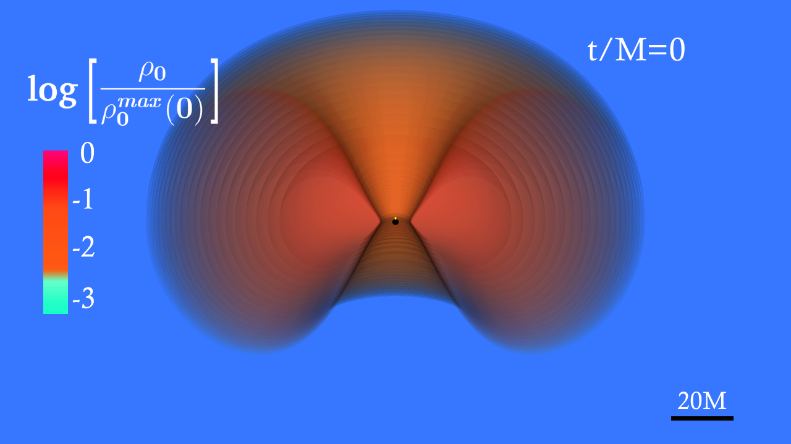
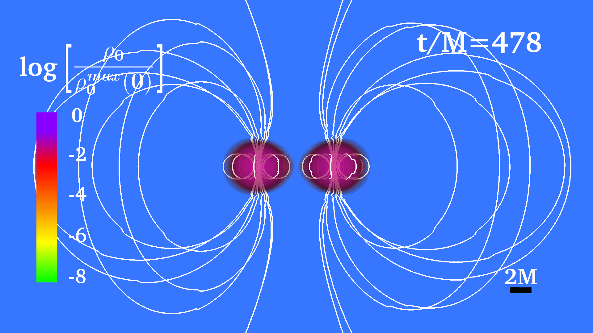

Numerical Relativity Research
We use large-scale supercomputer simulations to solve Einstein's equations in the strong-gravity regime. I focuses on compact objects—including binary neutron stars, black holes, and neutron star–black hole systems— to understand the inspiral, merger, and post-merger evolution of these systems, as well as the gravitational waves, electromagnetic counterparts, and relativistic jets they produce. Our group combines general relativity with relativistic hydrodynamics and magnetohydrodynamics (GRMHD) to investigate phenomena such as gravitational collapse, black hole formation, neutron star stability, and multimessenger astronomy. The simulations provide theoretical predictions that support observations from gravitational-wave detectors such as LIGO, Virgo, and KAGRA, helping to reveal the physics of matter and spacetime under the most extreme conditions in the universe.
Gravitational Wave Signals Shapiro group
The Gravitational Wave Memory from Binary Neutron Star Mergers
The gravitational wave signal produced by the merger of two compact objects includes both an oscillatory transient and a non-oscillatory part, the so-called memory effect. This produces a permanent displacement of test masses and has not yet been measured.

Click the poster preview to open the full PDF.
Project Video
Gravitational Wave Signals from Black Hole Accretion Disk
Methods
We perform three-dimensional general relativistic hydrodynamics (GRHD) simulations of black hole accretion disks to investigate the growth of non-axisymmetric instability modes. By evolving the spacetime and fluid self-consistently, we analyze how these instabilities develop and produce gravitational-wave signals.

Results
Our simulations show that unstable accretion disks can develop non-axisymmetric structures that emit continuous gravitational waves. We study the properties of these instability modes, their growth rates, and the resulting gravitational-wave signatures to better understand potential observational signals.
Visualization
We visualize the evolution of the accretion disk, density structures, and gravitational-wave emission using simulation snapshots and animations. These visualizations help illustrate how the instability develops and propagates throughout the disk.
Post-Merger Gravitational Wave Signals From Binary Neutron Stars: Effect of the Magnetic Field
Methods
The oscillation modes of neutron star (NS) merger remnants, as encoded by the kHz postmerger gravitational wave (GW) signal, hold great potential for constraining the as-yet undetermined equation of state (EOS) of dense nuclear matter. We perform three-dimensional general relativistic hydrodynamics (GRHD) simulations of neutron stars to investigate the growth of non-axisymmetric instability modes.

Results
the inclusion of magnetic fields can result in a shift of the frequency of the dominant quadrupolar mode of the merger remnant by up to several hundred Hz, an imprint of the magnetic field that may be detectable by third generation observatories. In this work we extent our previous analyses by conducting merger simulations with a range of different initial magnetic field strengths and magnetic field topologies, inserted at 1ms prior to merger, for two different binary ADM masses and two different equations of state. We find that in most cases the presence of the magnetic field causes the NS remnant to lose more angular momentum due to the effective turbulent magnetic viscosity and magnetic braking, resulting in an increase in remnant compactness and an associated time-dependent shift in the dominant quadrupolar f2 frequency of the postmerger GW signal and a decrease in the lifetime of HMNS remnants. The maximum increase in frequency, as obtained from the whole postmerger signal, is ∼200 Hz for the strongest magnetic field considered and ∼50 Hz for the median case.
Visualization
We visualize the evolution of the Neutron Star merger
Visualization
HPCs
We perform three-dimensional general relativistic hydrodynamics (GRHD) simulations of black hole accretion disks to investigate the growth of non-axisymmetric instability modes. By evolving the spacetime and fluid self-consistently, we analyze how these instabilities develop and produce gravitational-wave signals.
Visit
Our simulations show that unstable accretion disks can develop non-axisymmetric structures that emit continuous gravitational waves. We study the properties of these instability modes, their growth rates, and the resulting gravitational-wave signatures to better understand potential observational signals.
Automated pipeline "Abid_bot"
We visualize the evolution of the accretion disk, density structures, and gravitational-wave emission using simulation snapshots and animations. These visualizations help illustrate how the instability develops and propagates throughout the disk.
Initial Data for Neutron Stars Tsokaros group
Eccentricity Redunction for the Initial Data of Rotating Neutron Star Simulation
Methods
We perform three-dimensional general relativistic hydrodynamics (GRHD) simulations of black hole accretion disks to investigate the growth of non-axisymmetric instability modes. By evolving the spacetime and fluid self-consistently, we analyze how these instabilities develop and produce gravitational-wave signals.
Results
Our simulations show that unstable accretion disks can develop non-axisymmetric structures that emit continuous gravitational waves. We study the properties of these instability modes, their growth rates, and the resulting gravitational-wave signatures to better understand potential observational signals.
Visualization
We visualize the evolution of the accretion disk, density structures, and gravitational-wave emission using simulation snapshots and animations. These visualizations help illustrate how the instability develops and propagates throughout the disk.